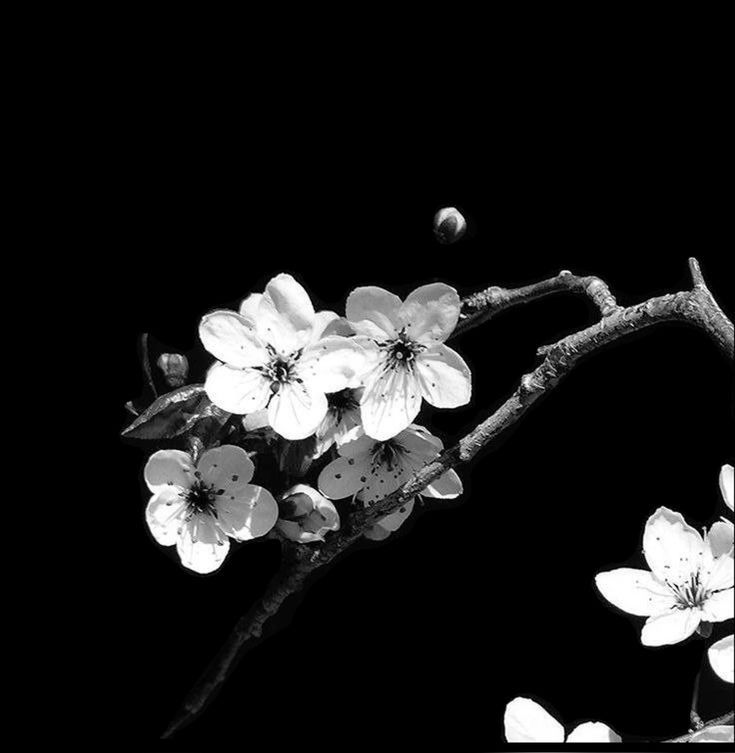
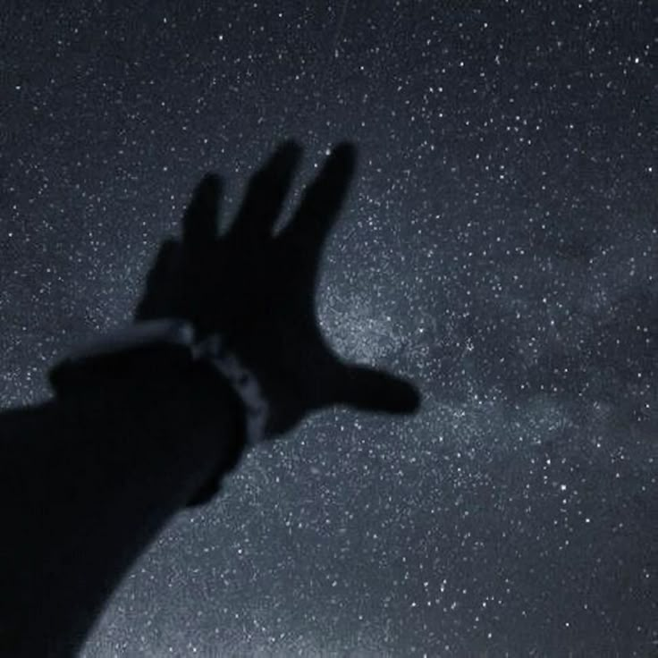
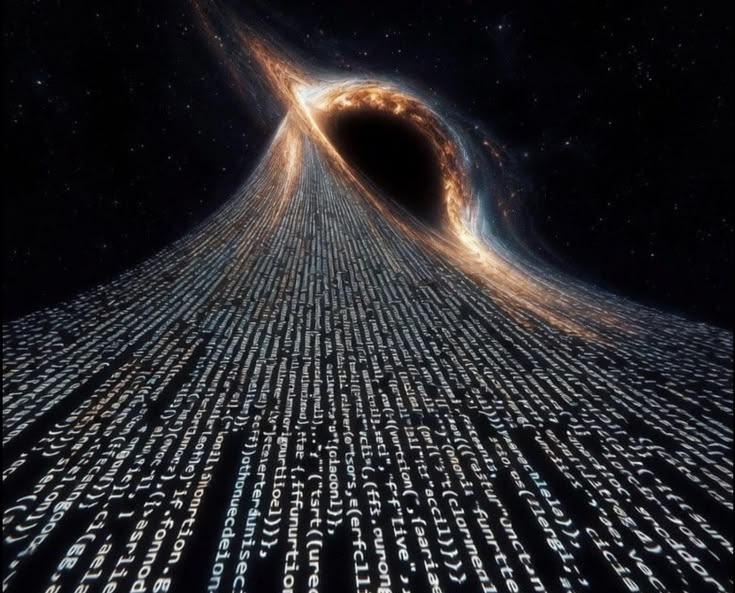
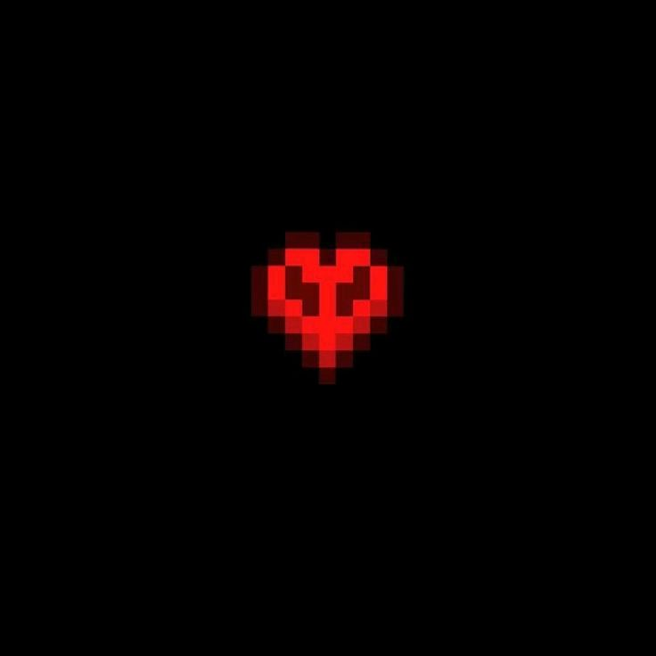
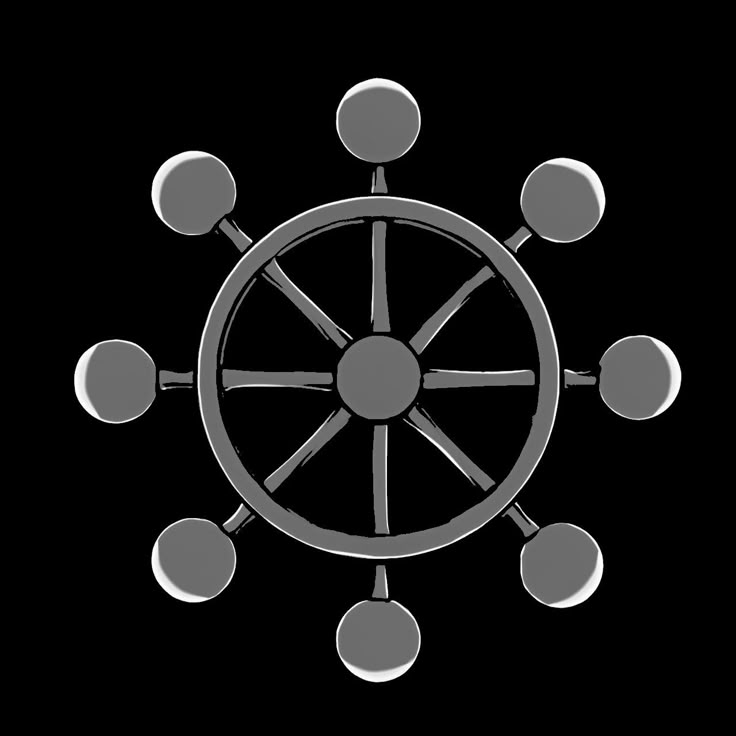
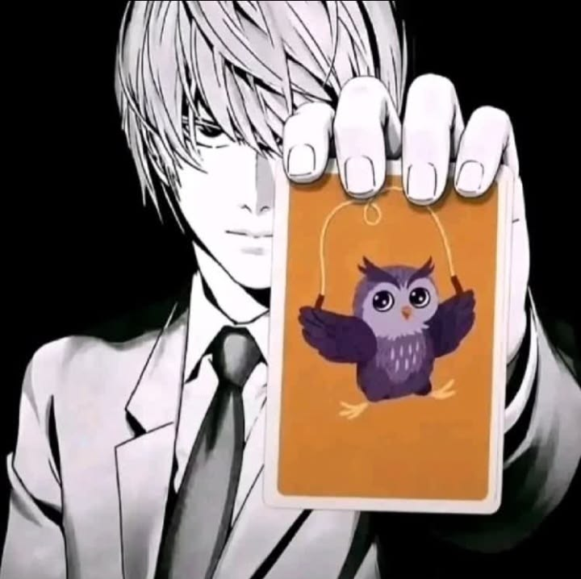
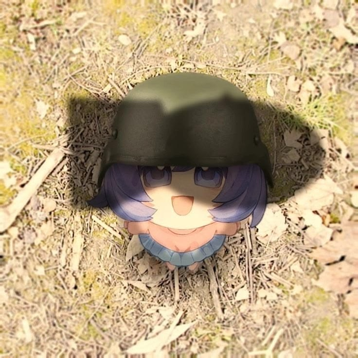

-
Фритрек и нулевой спринт: Подготовка к работе

Это было самое начало пути. На этом этапе важно было проникнуться основами и настроиться на учёбу. И, возможно, подумать, как новые знания могут повлиять на ваше будущее.
Начало обучения, наверное, было одним из самых волнительных и в какой-то мере трудных этапов: я не был до конца уверен в себе и в том, что смогу изучать программирование, а в дальнейшем совмещать эти курсы со школой. Меня многое волновало, но я решил попробовать, ведь нельзя всё время бездельничать, тем более что демо-курс мне понравился.
-
1 спринт: Я — чистый лист

На первых этапах мы работали со страхами и сомнениями, которые часто испытывают новички. Один из них — страх перед чистым листом. Это, конечно же, намного сложнее, чем боязнь куска бумаги. Часто за этим ощущением скрываются более глубокие вопросы: с чего начать? а вдруг будет слишком сложно? что, если я не справлюсь?
В этот момент я был в предвкушении, ждал многого от курсов и от себя. Я проходил урок за уроком, пытался запомнить всё, что давалось в теории, и надеялся, что моя память не подведёт меня на первой проектной работе. На тот момент всё, что я понимал, — это то, что программировать мне нравится.
-
1 спринт: А если не получится?

Первый проект — позади! Но это всё ещё самое начало пути. Радость могла быстро померкнуть и смениться ожиданием провала. Или вы, наоборот, могли вдохновиться успехами и поверить в себя.
Первый спринт пролетел быстро, так как было лето, я мог уделять программированию по 5, а то и больше часов в день на теорию с практикой. Сказать, что меня затянуло, — ничего не сказать. После того, как я завершил первый спринт с запасом примерно в две недели, я почувствовал, что смогу учиться дальше и всё больше погружался в теорию.
-
2 спринт: Погоня за идеалом
На этом этапе вы уже достаточно разбирались в основах вёрстки, чтобы понять, как много ещё впереди. Вы могли попытаться погнаться за идеалом и понять, что он недостижим. А, может, вы вовсе и не подвержены перфекционизму и вместо того, чтобы сделать идеально, старались просто сделать.
Отдохнув после первого спринта, я уже с меньшим волнением начал изучать новые свойства и прочее. Периодически я что-то не понимал, обдумывал, застревал, но потихоньку приближался ко второй проектной работе.
-
2 спринт: О тех, кто рядом

Всё это время вы были не одиноки (хотя, возможно, иногда и чувствовали, что одни против целого мира). Вас окружали одногруппники, команда сопровождения и просто близкие люди, которым можно пожаловаться, если очередной макет просто так не поддавался. Осваивать что-то новое легче, когда рядом есть единомышленники, не правда ли?
Второй проект был для меня одним из самых сложных. Не могу сказать почему, но второй спринт мне в теоретическом плане дался не очень. С проектной работой мне очень помогло то, что она была всего второй по счёту: к ней прилагалась памятка с подсказками, что и как делать. После сдачи проекта я снова думал о том, что теория будет слишком сложной, и о прочей ерунде, но бросать я не хотел, а чтобы не терять время зря, решил сверстать что-то своё и закрепить полученную теорию.
-
3 спринт: Обходные стратегии

На этом курсе вы постоянно решали разные задачи. В какой-то момент вам могло показаться, что решения просто иссякли. Значит, пришло время посмотреть на задачу под другим углом.
Отдохнув и собравшись с мыслями, я погрузился в новые горы текста и практики. Третий спринт оказался проще второго, что не могло не радовать. В остальном особо ничего не изменилось: мне всё так же нравилось программировать, и я всё так же уделял этому по 5 часов и больше.
-
3 спринт: Когда опускаются руки

Во время учёбы часто возникает чувство, когда не знаешь, за что хвататься. Вроде и проектную пора сдавать, и задачи хочется порешать, и в теории получше разобраться, и жизнь не забыть пожить. В такие моменты очень нужна концентрация. Вспомните, откуда вы её черпали.
Третий проект, пусть и был самым большим (здесь пришлось писать страницу с нуля, заниматься адаптивом под разные экраны, а также писать море свойств для разных тем браузера), но даже так он дался мне проще проектной работы второго спринта, чему я был рад. Писать страницу с нуля мне очень понравилось, пусть и было сложно в некоторых моментах и пришлось слегка поторопиться, ведь я хотел закончить с проектом до начала учёбы. В целом всё, что меня волновало, — это то, как пройдёт мой четвёртый и все последующие спринты вместе со школой, но эти размышления я решил оставить на потом.
-
«Сейчас я здесь»

Сейчас вы уже очень много знаете о вёрстке. Но это только начало. Во-первых, впереди ещё много материала про «красотищу». Во-вторых, с окончанием курса учёба не заканчивается. Вёрстка — это целый мир. И этот мир постоянно меняется. Познать его полностью не получится, но это тот случай, когда важен сам процесс познания. Ведь часто путь — и есть результат.
Сейчас, дописывая четвёртый проект, я в целом понял, что волноваться особо не о чём: совмещать программирование со школой у меня получается, а уделять 15–20 часов в неделю только звучит страшно, хотя заниматься каждый день по несколько часов может утомлять. Сам четвёртый проект по ощущениям легче третьего, но не менее интересный. После его сдачи я с наслаждением уйду на каникулы и буду ждать нового спринта.